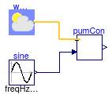

Examples for solar thermal collector controller models
This package contains examples demonstrating the use of models that can be found in Buildings.Fluid.SolarCollectors.Controls.
Extends from Modelica.Icons.ExamplesPackage (Icon for packages containing runnable examples).
| Name | Description |
|---|---|
| Example for the solar pump controller |
 Buildings.Fluid.SolarCollectors.Controls.Examples.SolarPumpController
Buildings.Fluid.SolarCollectors.Controls.Examples.SolarPumpController
Example for the solar pump controller

This model illustrates the use of the Buildings.Fluid.SolarCollectors.Controls.SolarPumpController model. Based on weather data and inlet temperature, the controller switches the pump on and off.
Extends from Modelica.Icons.Example (Icon for runnable examples).